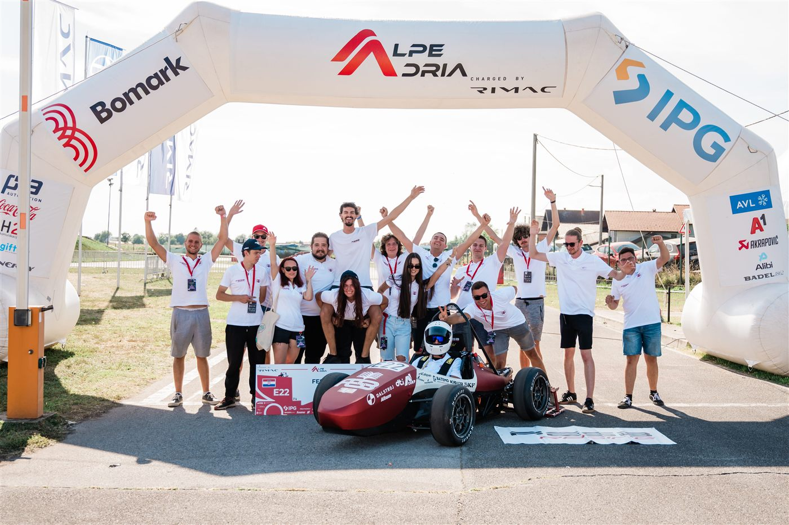

Work
Projects
A selection of engineering and software projects. More added as they're finished.

Inverter MCU Module
STM32-based control board for the traction inverter, running a field-oriented control loop — Clarke-Park transforms, decoupling, and PI current control — to drive the motor. Characterized analog input channels for linearity and noise, and worked through a structured bring-up list across power supply, CAN, encoder, and gate driver interfaces.

Inverter Gate Driver
Gate driver board for the traction inverter's power stage. Verified switching behaviour — turn-on/turn-off transitions and ringing — with double-pulse testing on the bench, and used SPICE simulation to estimate losses ahead of hardware validation.

VCU — Vehicle Control Unit
Central control PCB for the race car, built around an onboard MCU with dual CAN bus interfaces, an IMU, and 12V/5V digital and analog I/O. Designed the schematic and PCB layout in Altium and brought the board up from assembly through first power-on.

FESB Racing — eFRT01
FESB Racing's electric Formula Student race car. Led the electronics team through design, integration, and testing of the vehicle's electronic systems — including the complete wiring harness and traction inverter configuration.